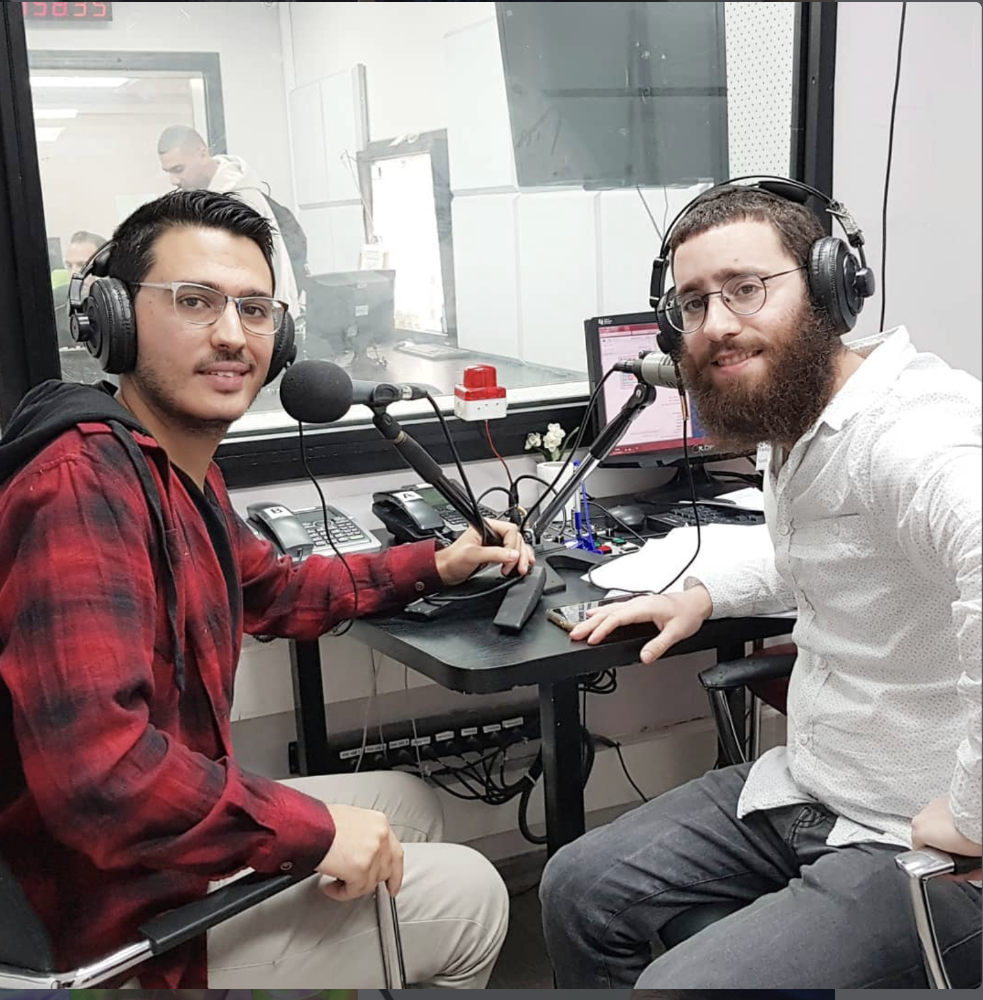
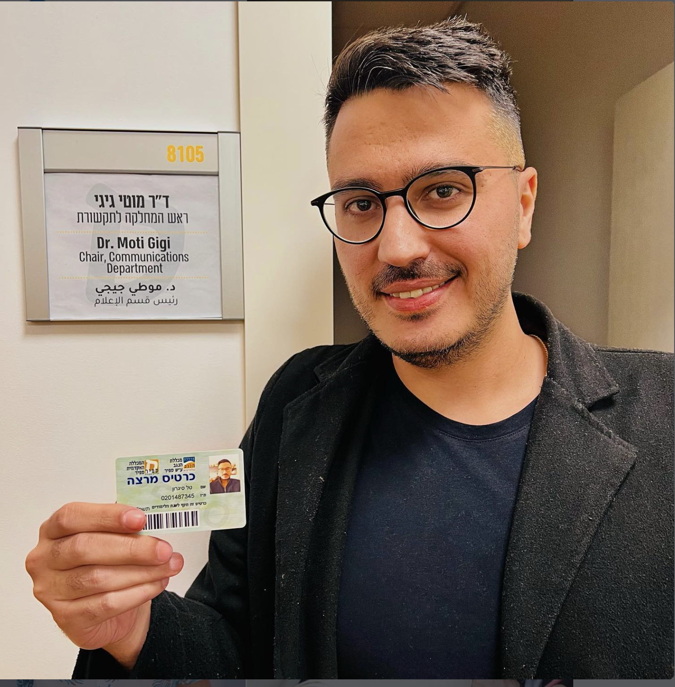
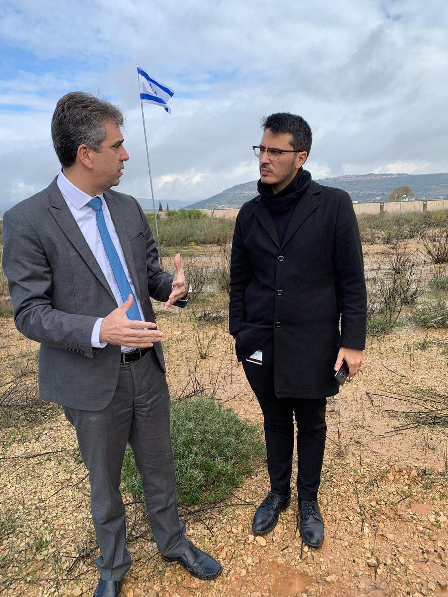
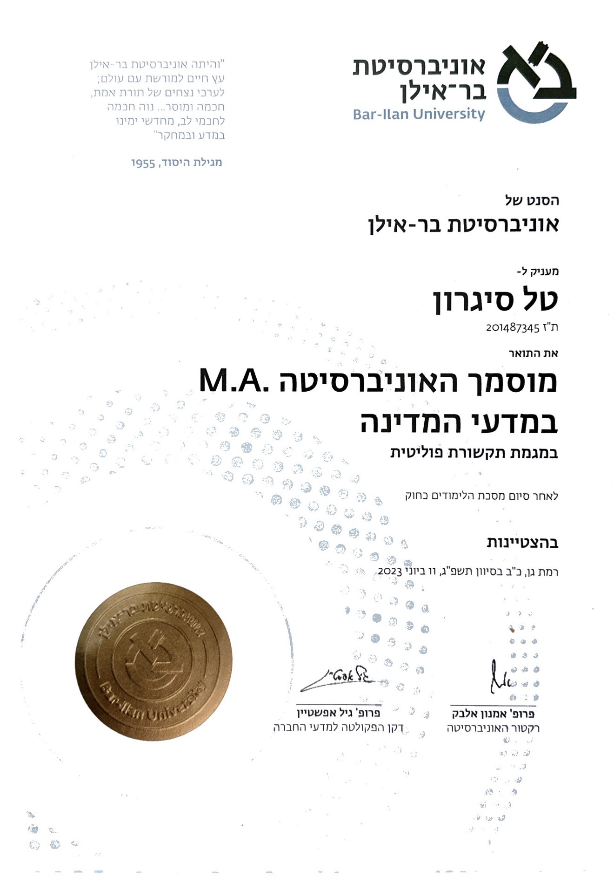

הסיפור האישי של טל סיגרון — מעיתונות שטח, דרך דוברות בכנסת ובממשלה, ועד להקמת יסמין תקשורת.
המסע שלי בעולם התקשורת לא התחיל באולפנים ממוזגים, אלא דווקא בעבודה קשה. אחרי שהשתחררתי מהצבא, נדדתי בין עבודות מזדמנות: עבודה מועדפת בדפוס בארי, מתדלק בתחנת דלק ומוכר בקיוסק. על אף קשיים מבית, קיבלתי החלטה לצאת לאקדמיה ונרשמתי ללימודי תואר ראשון בתקשורת ועיתונות, עם התמחות ברטוריקה, במכללת ספיר.
במהלך הלימודים, התייעצתי עם מרצה שהיה בינינו חיבור טוב – אלמוג בוקר. העצה שלו הייתה פשוטה וחדה: "אתה חייב להתנסות בתחום, לא משנה באיזו דרך, אפילו בהתנדבות". פניתי לבעלים של מקומון וביקשתי לכתוב את מדור הרכילות. אחרי כמה שבועות, ביקשתי לכתוב כתבה אמיתית ושיעשה איתה מה שהוא רוצה. הוא הסכים. בסוף השבוע, הכתבה שלי התנוססה על שער העיתון.
הקידום שלי בעיתון היה "מהיר" (בכל זאת, מקומון...). קיבלתי הצעה להיות הכתב הראשי, ומהר מאוד הפכתי לעורך הראשי. וב"עורך ראשי" אני מתכוון גם לכתב היחיד, ולזה שעושה שם הכל חוץ מגרפיקה ודפוס. עוד רגע גם הייתי הולך לגבות את הכסף מהמפרסמים.
באותה תקופה, אלמוג בוקר הביא את יניר יגנה (כתב walla בדרום) להרצאת אורח. יניר התיישב לידי, שאל מאיפה אני, וכשעניתי "מנתיבות", הוא עשה אחד ועוד אחד ושאל אם אני רוצה לעבוד ברדיו דרום. אחרי מבחני ידע כללי וקריינות, התקבלתי. מצאתי את עצמי מג'נגל בין לימודים, עריכת עיתון, שידורים ברדיו וניהול עמודי פייסבוק – הכל במקביל.

לאורך כל המסע האקדמי הזה, לא הייתי לבד. הייתי (ועודני) חבר גאה בקרן אייסף, הקרן למצוינות חברתית. מעבר לעזרה במימון הלימודים, אייסף העניקה לי מודעות סביבתית וחברתית עמוקה. דרך הקרן, ובזכות חיבור מדויק של סמנכ"לית הקרן, רותם כהן כחלון, נפתחה בפניי הדלת לשלב הבא בקריירה מיד עם סיום הלימודים.
האהבה שלי לאקדמיה ולתחום התקשורת הובילה אותי לסגירת מעגל אישית מרגשת, כשחזרתי למכללת ספיר, הפעם כחלק מהסגל האקדמי. שימשתי כמתרגל ומרצה בקורסים המרכזיים של המחלקה לתקשורת: סטוריטלינג וכתיבת סיפור, ופסיכולוגיה חברתית. העמידה מול סטודנטים והעברת החומר, חידדה אצלי עוד יותר את היכולת לזקק סיפורים ולפצח את דרכי ההשפעה על קהלים שונים.

הצטרפתי למערך הדוברות של מפלגת "כולנו" והתקדמתי עד לתפקיד "דובר מפלגה" של שר אוצר מכהן (משה כחלון). בהמשך הדרך, שימשתי כדובר של חבר הכנסת לשעבר רועי פולקמן ושל שר הכלכלה לשעבר אלי כהן, ועבדתי כיועץ פרלמנטרי של ד"ר שלמה קרעי (כיום שר התקשורת).

למרות האינטנסיביות של מסדרונות השלטון, החלטתי שלא עוצרים כאן. תוך כדי העבודה התובענית בכנסת, השלמתי תואר שני בתקשורת פוליטית ומדעי המדינה, עם התמחות בניהול משברים ועמידה מול קהל. השנים האלו – בשילוב האקדמיה והשטח – לימדו אותי איך מתקבלות החלטות, איך מנהלים משברים ברמה הלאומית, ואיך בונים מסרים שמגיעים לכל בית.


בינואר 2021, אחרי 3 שנים אינטנסיביות כעיתונאי ו-3 שנים כדובר פוליטי, החלטתי לצאת לדרך עצמאית. בכל יום שעובר אני מדייק את הדרך הזו יותר ומבין בדיוק איפה היכולות שלי באות לידי ביטוי בצורה המיטבית.
המומחיות שלי היא לקחת מרואיין או פרזנטור – בין אם זה ראש רשות, שר, חבר כנסת, מנכ"ל או בעל עסק – להעמיד אותו מול מצלמה, להוציא ממנו את המיטב ולגרום לו לסמוך עליי. קולגות ודוברים אוהבים לעבוד איתי כי הם יודעים שזו משימה של "שגר ושכח". וזה בדיוק מה שאני אוהב לעשות: להקל על אנשים במשימות שהם פחות אוהבים להתעסק בהן, לחפש את הוואקום, ולטפל בו במקצועיות מכל כיוון.